Dokumentasi Presentasi Aplikasi
Panduan halaman demi halaman untuk mempresentasikan aplikasi kepada dosen pembimbing. Setiap halaman memuat satu tampilan antarmuka, penjelasan fungsinya, serta poin-poin penting yang perlu dijelaskan saat presentasi.
Daftar Isi
| Nama Mahasiswa | ………………………………………………… |
|---|---|
| NIM | ………………………………………………… |
| Program Studi | ………………………………………………… |
| Dosen Pembimbing | ………………………………………………… |
| Teknologi | Laravel 12 · Inertia.js · React · Flask · Random Forest |
| Tanggal | 4 November 2026 |
Gerbang masuk sistem. Seluruh fitur hanya dapat diakses setelah pengguna terautentikasi, karena data yang diproses merupakan data rekam medis.
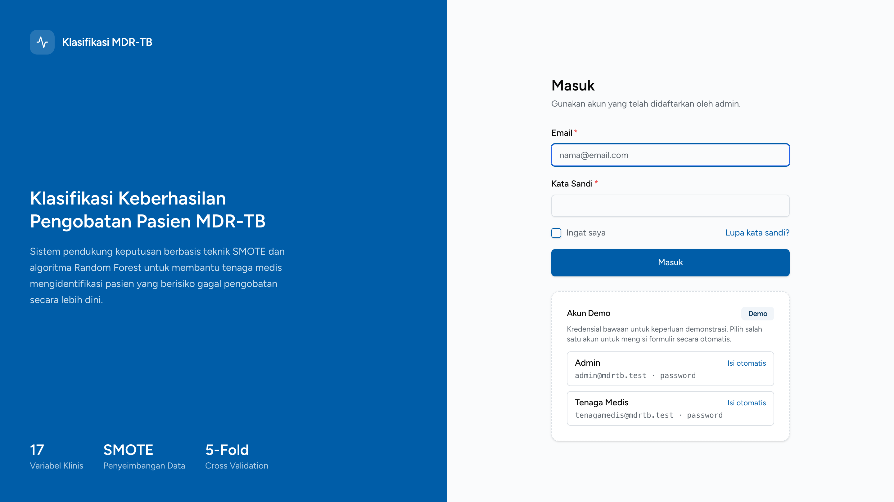
Penjelasan Detail poin yang perlu dipahami sebelum menjelaskan
Memverifikasi identitas pengguna sebelum masuk ke sistem, lalu mengarahkan ke Dashboard sesuai peran akun: admin atau tenaga medis. Panel kiri menampilkan ringkasan sistem — 17 variabel klinis, teknik SMOTE, dan validasi 5-fold.
Inti yang disampaikan: login adalah lapisan pertama kendali akses sebelum data pasien dapat dibuka.
Halaman pertama setelah login. Menampilkan sapaan, peran pengguna, dan kartu menu yang tersedia — daftar menu menyesuaikan hak akses.
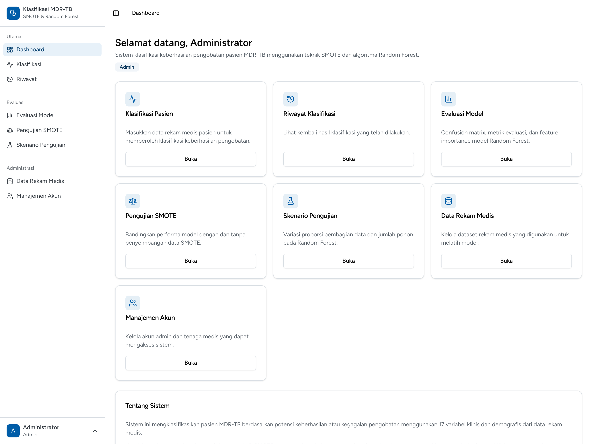
Penjelasan Detail poin yang perlu dipahami sebelum menjelaskan
Pusat navigasi: pengguna melihat ringkasan sistem dan memilih fitur yang akan dijalankan. Tampilan berbeda antara admin dan tenaga medis karena daftar menu disaring berdasarkan peran.
Inti yang disampaikan: hak akses diterapkan dua kali — pada tampilan dan pada rute peladen.
Inti sistem. Tenaga medis memasukkan data pasien dan tanggal awal pengobatan, sistem menghitung variabel turunan, lalu mengirim 17 variabel penelitian ke layanan machine learning.
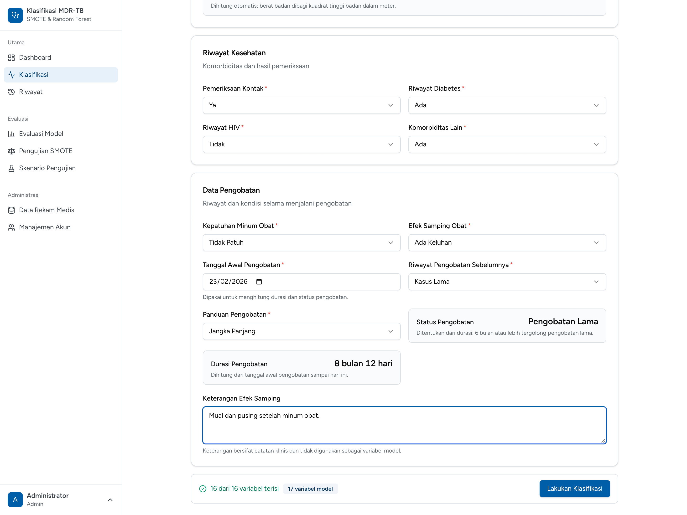
Penjelasan Detail poin yang perlu dipahami sebelum menjelaskan
Mengumpulkan 17 variabel prediktor dari rekam medis pasien, ditambah tanggal awal pengobatan sebagai metadata, lalu mengirimkannya ke model Random Forest untuk memperoleh label Berhasil atau Tidak Berhasil beserta probabilitasnya.
Inti yang disampaikan: IMT, kategori usia, durasi, dan status pengobatan dihitung sistem agar data masukan konsisten; tanggal pengobatan tidak ikut dikirim ke model.
Keluaran utama sistem. Setelah formulir dikirim, halaman ini menampilkan label prediksi, tingkat keyakinan, probabilitas tiap kelas, dan rekomendasi tindakan klinis yang bisa langsung dibaca tenaga medis.
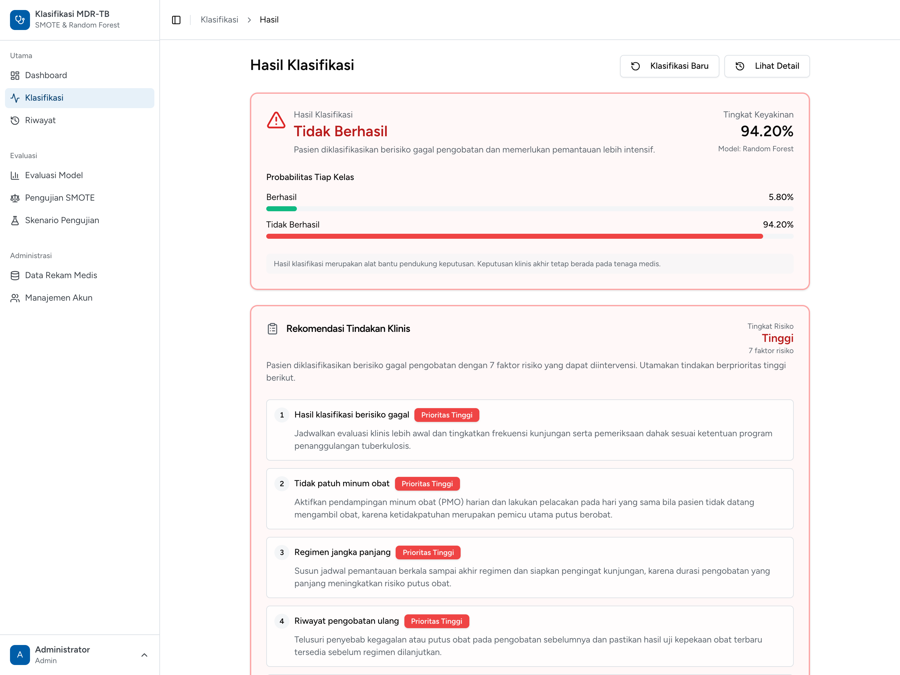
Penjelasan Detail poin yang perlu dipahami sebelum menjelaskan
Menyajikan hasil klasifikasi secara utuh: label, tingkat keyakinan, probabilitas tiap kelas, rekomendasi tindakan berprioritas, data pasien lengkap dengan tanggal awal, durasi, dan status pengobatan, serta sepuluh variabel paling berpengaruh.
Inti yang disampaikan: model hanya memberi label dan probabilitas; sistem menambahkan penalaran tindakan agar pasien berisiko tidak lolos dari perhatian.
Arsip seluruh klasifikasi yang pernah dijalankan. Admin melihat semua riwayat, sedangkan tenaga medis hanya melihat riwayat yang ia buat sendiri.
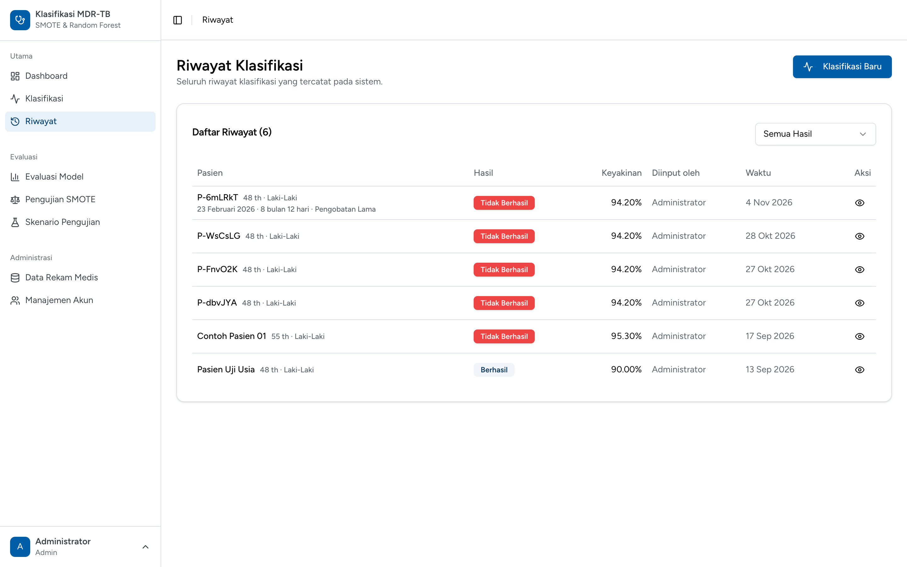
Penjelasan Detail poin yang perlu dipahami sebelum menjelaskan
Menampilkan daftar hasil klasifikasi secara ringkas agar dapat ditelusuri kembali, dibandingkan, atau dibuka detailnya. Tabel memuat identitas pasien, tanggal awal, durasi dan status pengobatan, label hasil, keyakinan, penginput, dan waktu.
Inti yang disampaikan: pembatasan akses riwayat diterapkan pada kueri basis data, sehingga tenaga medis tidak mungkin melihat data pasien milik pengguna lain.
Membuka satu catatan klasifikasi secara lengkap, termasuk data masukan yang tersimpan. Halaman ini juga menjadi tempat menghapus riwayat.
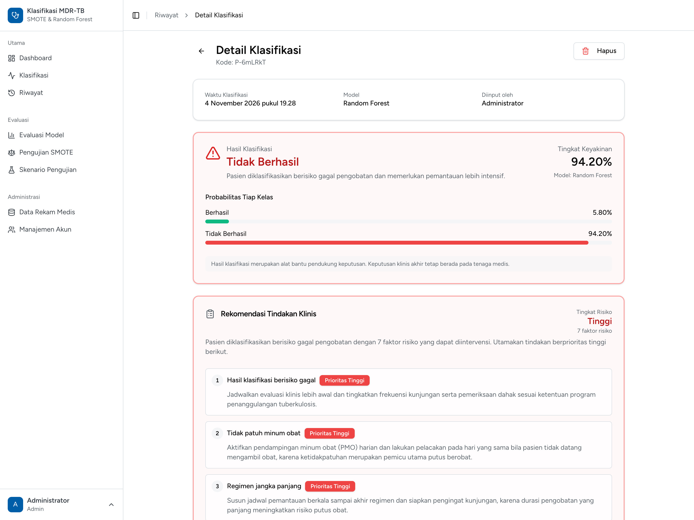
Penjelasan Detail poin yang perlu dipahami sebelum menjelaskan
Menyajikan kembali satu hasil klasifikasi secara utuh: waktu, model, penginput, label dan probabilitas, rekomendasi klinis, seluruh nilai variabel yang dimasukkan, informasi pengobatan, dan variabel paling berpengaruh.
Inti yang disampaikan: data rekam medis dilindungi sampai tingkat baris — mengetahui ID catatan tidak cukup untuk membukanya.
Bukti kuantitatif performa Random Forest pada data uji, sekaligus penjelasan mengapa recall dijadikan metrik utama penelitian.
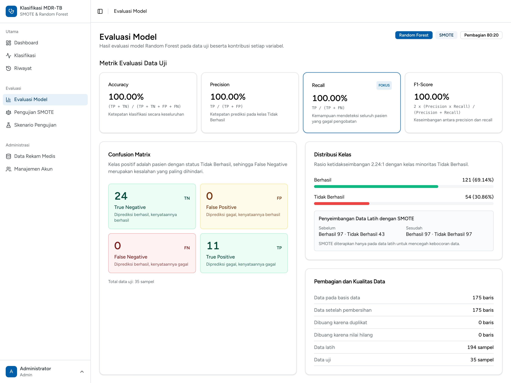
Penjelasan Detail poin yang perlu dipahami sebelum menjelaskan
Menampilkan hasil evaluasi model yang sedang digunakan: empat metrik utama, confusion matrix, distribusi kelas, pengaruh SMOTE, validasi silang lima lipatan, dan kontribusi setiap variabel.
Inti yang disampaikan: recall diberi label fokus karena biaya klinis terbesar bukan salah menandai pasien berhasil, melainkan melewatkan pasien yang berisiko gagal.
Membuktikan kontribusi SMOTE secara empiris: dua model dilatih pada data yang sama, satu tanpa SMOTE dan satu dengan SMOTE, lalu hasilnya dibandingkan.
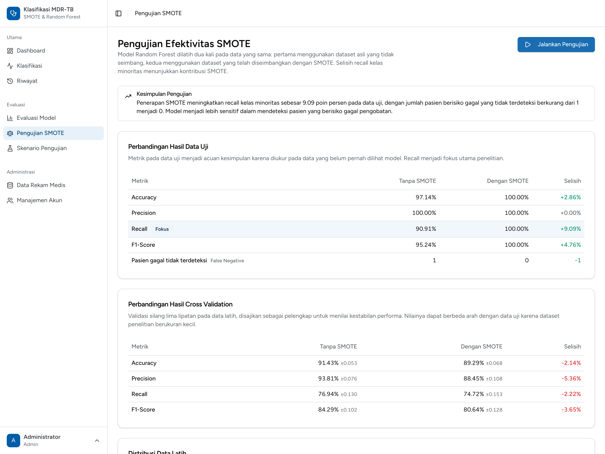
Penjelasan Detail poin yang perlu dipahami sebelum menjelaskan
Menjawab pertanyaan penelitian: apakah SMOTE benar-benar meningkatkan kemampuan model mendeteksi kelas minoritas? Selisih recall menjadi bukti utamanya.
Inti yang disampaikan: SMOTE terbukti meningkatkan recall pada data uji, tetapi efeknya pada dataset kecil tidak selalu seragam di semua metrik — karena itu kedua tabel ditampilkan.
Menguji kestabilan model terhadap dua hal: proporsi pembagian data dan jumlah pohon pada Random Forest. Tujuannya menemukan konfigurasi terbaik sekaligus menghindari overfitting.
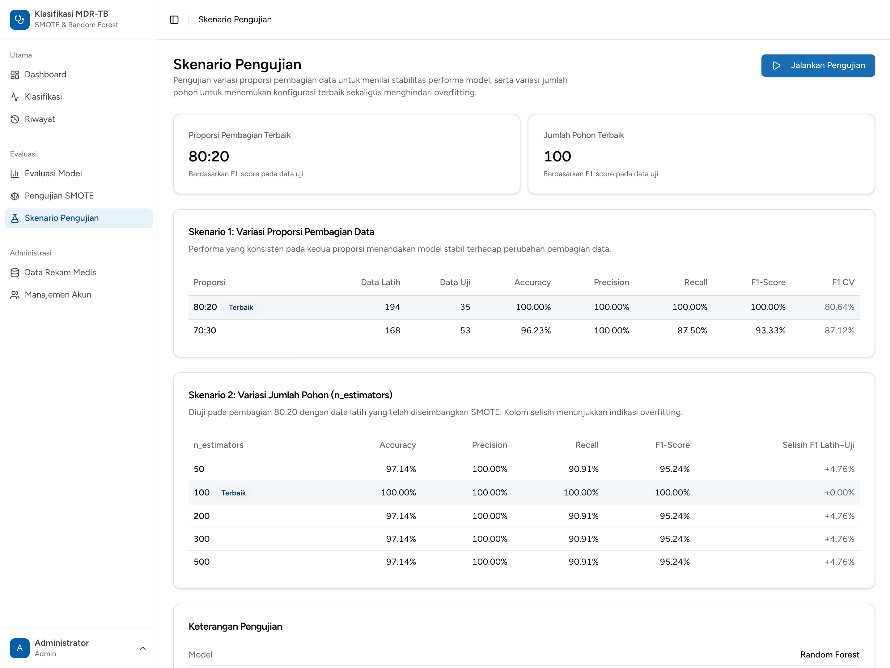
Penjelasan Detail poin yang perlu dipahami sebelum menjelaskan
Menyajikan hasil dua skenario pengujian beserta konfigurasi terbaiknya: proporsi pembagian data 80:20 dan jumlah pohon 100, masing-masing dipilih berdasarkan F1-score pada data uji.
Inti yang disampaikan: pemilihan hyperparameter dilakukan berdasarkan bukti pada data uji, bukan tebakan, dan selalu disertai pemeriksaan selisih latih–uji.
Pusat pengelolaan dataset penelitian. Admin dapat menambah, mengubah, dan menghapus baris data, memeriksa kualitas data, serta melatih ulang model.
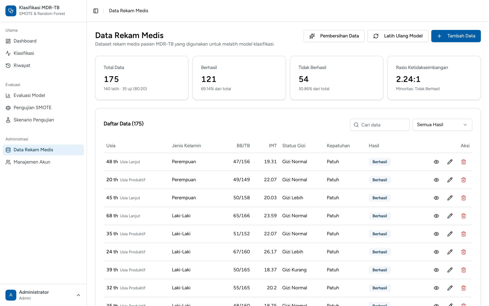
Penjelasan Detail poin yang perlu dipahami sebelum menjelaskan
Menampilkan seluruh data rekam medis yang dipakai sebagai data latih, lengkap dengan statistik kelas dan rasio ketidakseimbangan. Dari sini admin juga memicu pelatihan ulang model.
Inti yang disampaikan: model bukan berkas statis — ia mengikuti dataset. Perubahan data wajib diikuti pelatihan ulang agar evaluasi dan klasifikasi tetap selaras.
Digunakan admin untuk menambah atau mengubah satu baris dataset penelitian. Lima belas variabel diisi, dua variabel dihitung sistem, dan satu label keberhasilan pengobatan ditetapkan.
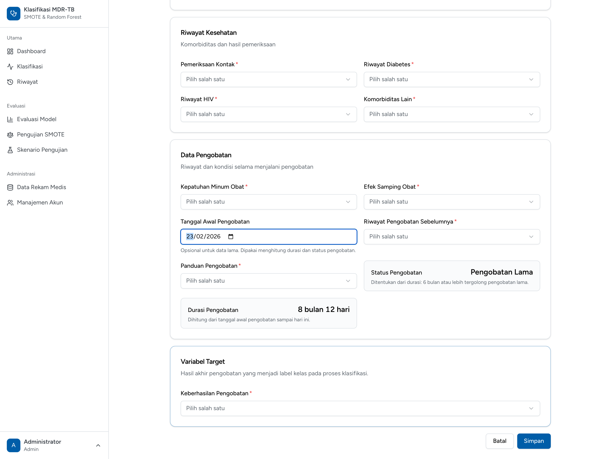
Penjelasan Detail poin yang perlu dipahami sebelum menjelaskan
Mengumpulkan data rekam medis baru secara terstruktur. Formulir dibagi empat kelompok agar pengisian mengikuti alur pemeriksaan: Data Demografis, Kondisi Fisik, Riwayat Kesehatan, dan Data Pengobatan.
Inti yang disampaikan: variabel turunan dihitung sistem agar tidak mungkin terjadi pencatatan yang bertentangan, misalnya usia 48 tahun tercatat sebagai usia produktif.
Menampilkan hasil pemeriksaan kualitas dataset sebelum dipakai melatih model: berapa baris dibuang karena nilai kosong dan berapa karena duplikat.
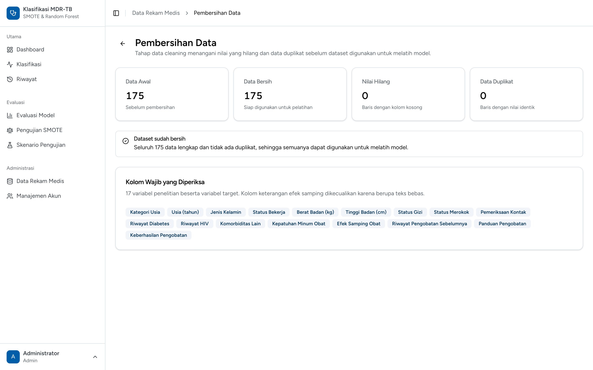
Penjelasan Detail poin yang perlu dipahami sebelum menjelaskan
Menjadi bukti bahwa tahap data cleaning benar-benar dijalankan dan dapat diaudit. Halaman menampilkan ringkasan empat angka kunci serta rincian setiap baris yang dikecualikan.
Inti yang disampaikan: kualitas data diperiksa secara eksplisit dan dapat ditelusuri, bukan diasumsikan bersih.
Satu-satunya tempat pembuatan akun. Admin mengelola akun admin dan tenaga medis; tidak ada pendaftaran mandiri karena data yang diproses bersifat rahasia.
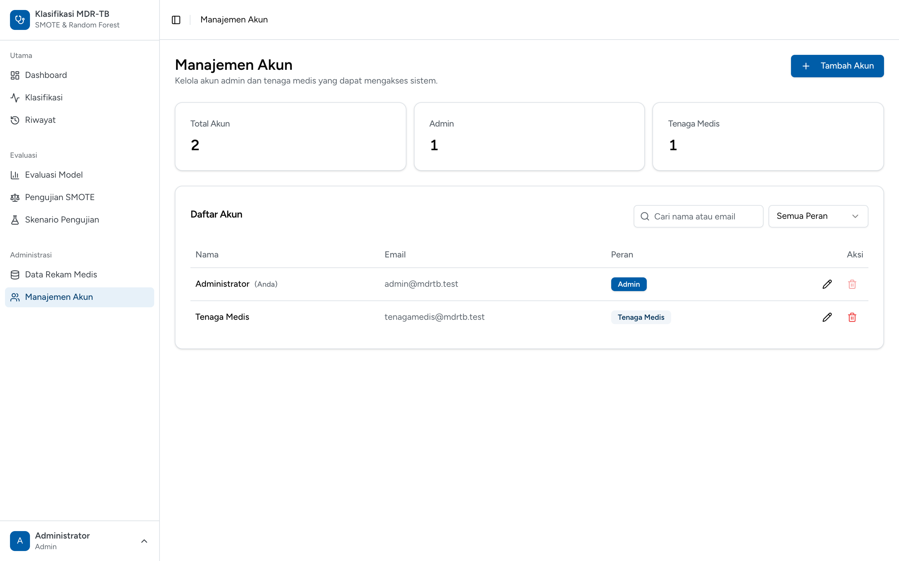
Penjelasan Detail poin yang perlu dipahami sebelum menjelaskan
Mengatur siapa yang boleh masuk ke sistem dan dengan peran apa. Setiap akun memiliki satu peran yang menentukan menu dan rute yang dapat diakses.
Inti yang disampaikan: akun dibuat terpusat oleh admin, dan aturan pengaman mencegah sistem terkunci tanpa pengelola.
Setiap pengguna dapat memperbarui namanya, alamat email, dan kata sandinya sendiri tanpa perlu bantuan admin.
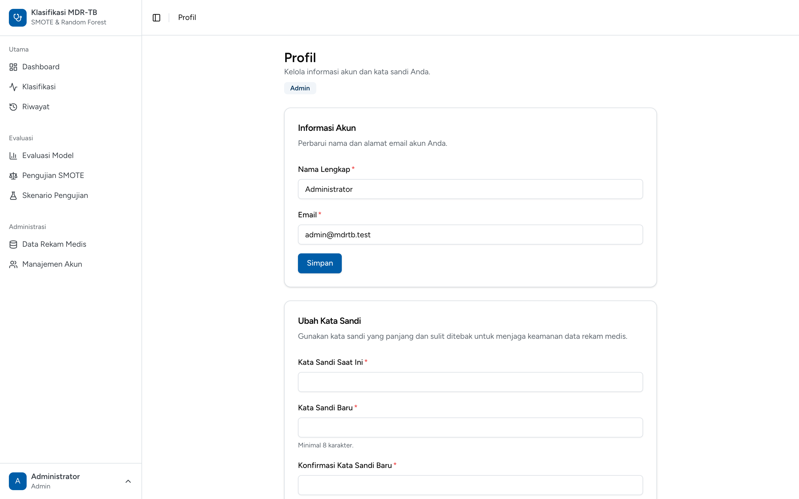
Penjelasan Detail poin yang perlu dipahami sebelum menjelaskan
Memberi kendali terbatas kepada pengguna atas identitas akunnya sendiri. Halaman terdiri atas dua formulir terpisah: Informasi Akun dan Ubah Kata Sandi.
Inti yang disampaikan: hak mengubah data dibatasi pada milik sendiri, sedangkan penetapan peran tetap berada di tangan admin.